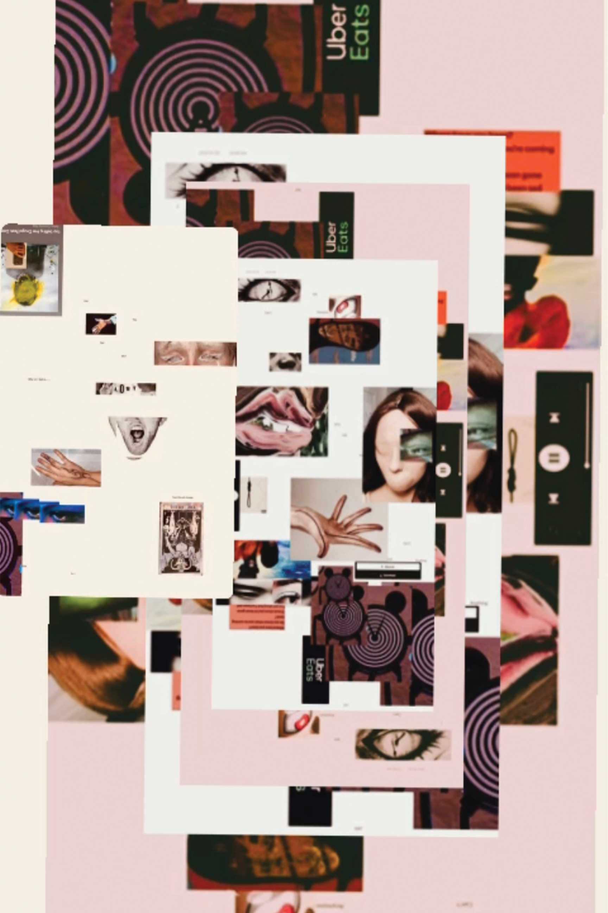

Final attempt
After the critique I started from my original idea.
In this idea I wanted to create a symbolism for meeting faces in real life vs. meetng online.
In my final piece I used the various images of faces and sections of the faec to create a larger face.
The distorted faces and hands reaching for eachother represnt the disconnet and coldness that covid has brought on.
The offset effect that Instagram had allowed me to place the images in a tunnling effect that helps potray taht this was an ongoing matter
and almost in a never ending cycle. I also used diffrent iamges like the uber eats logo as it is something that I used much or the play button
as covid has helped me develop more intrest for music. In conclusion I was a lot happier with this outcome and felt that it was a very instresting
way to open up my creative process and how I can break out of the box that design has.
